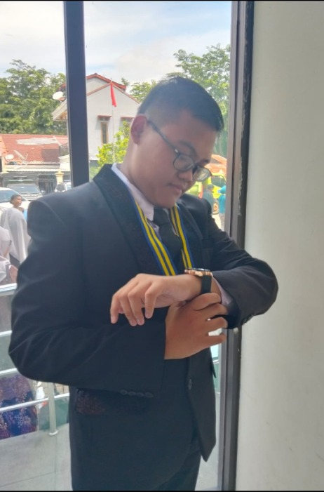
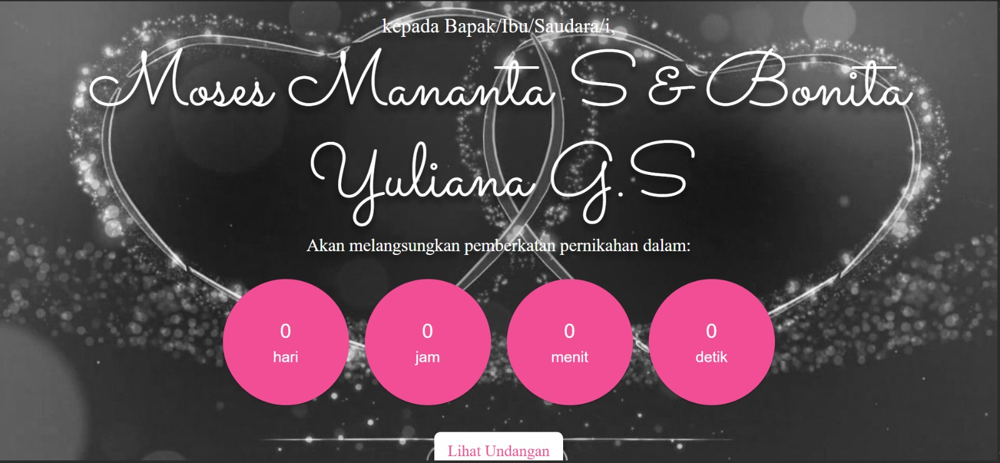
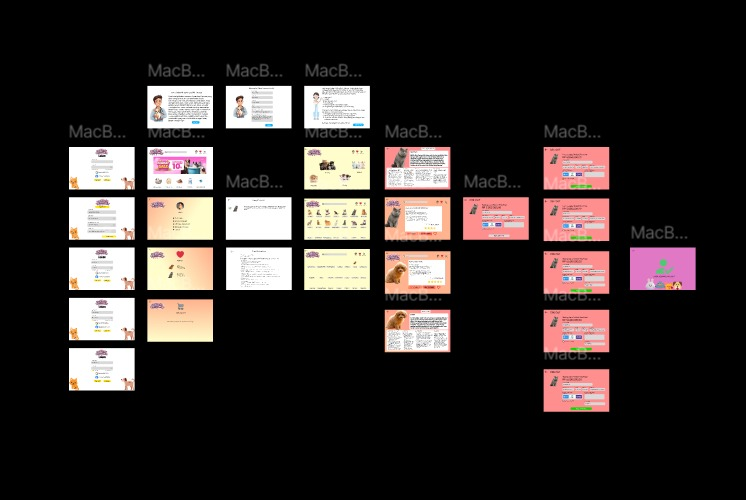
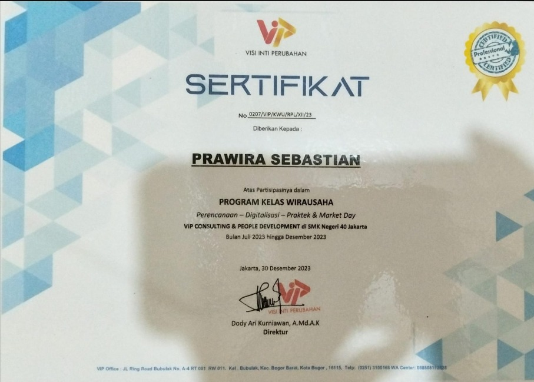
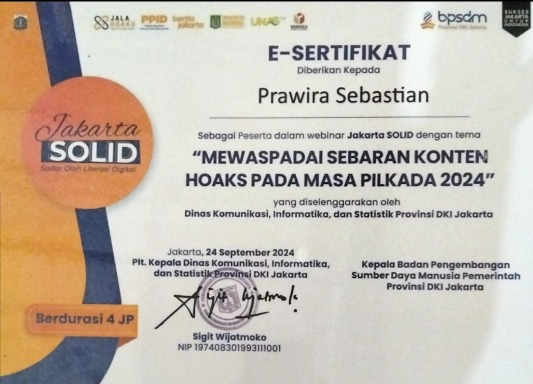
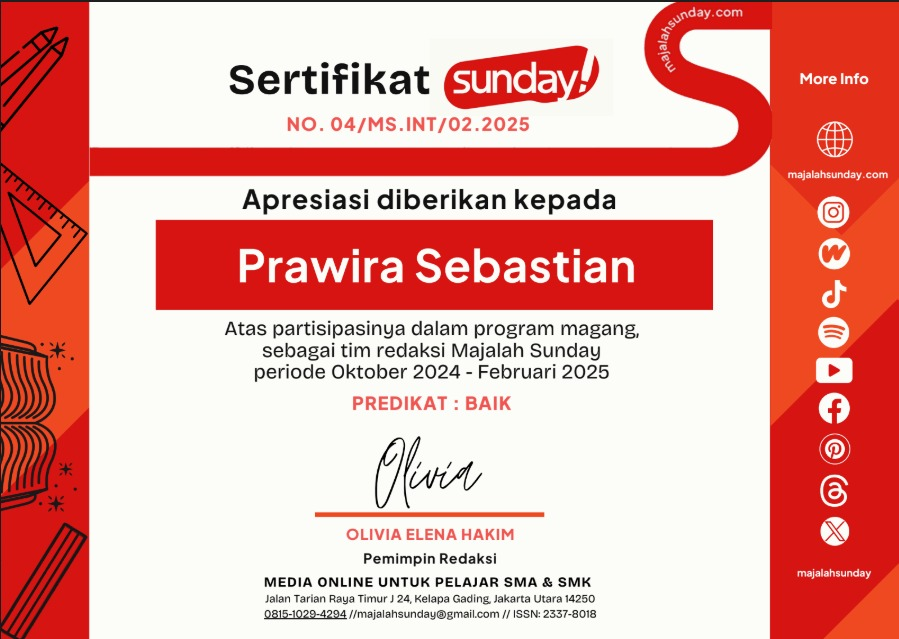
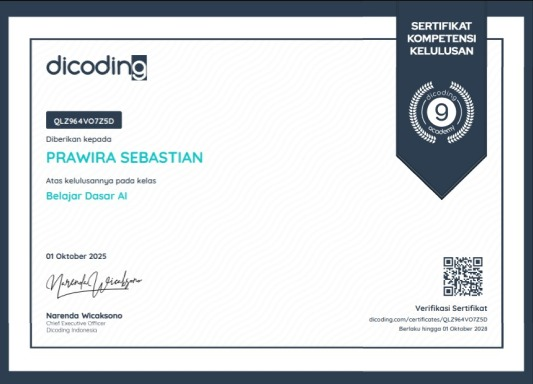
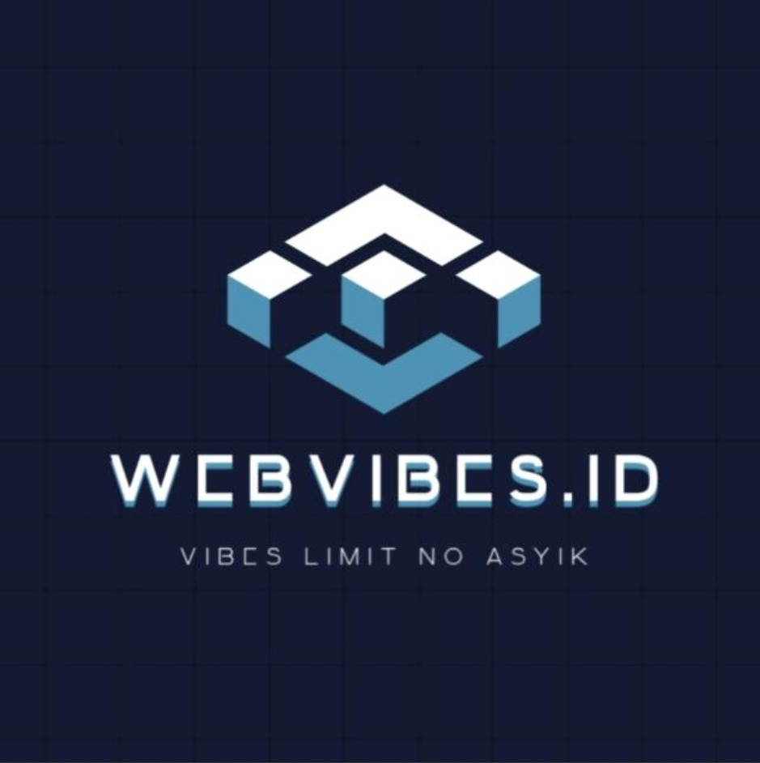

Welcome to My Portofolio
IT Programmer | Web Developer | UI/UX Desainer
About Me
Halo! Perkenalkan nama saya Prawira Sebastian, seorang kreator digital yang memiliki keahlian di bidang desain grafis dan pengembangan website. Saya menyukai tantangan dalam menciptakan tampilan yang estetis, user-friendly, dan responsif, agar setiap proyek tidak hanya terlihat menarik tetapi juga memberikan pengalaman terbaik bagi pengguna.
Dengan pemahaman mendalam pada HTML, CSS, PHP, MySQL, dan UI/UX Design, saya mampu membangun website yang modern serta sesuai kebutuhan bisnis. Selain itu, saya juga berpengalaman dalam membuat desain visual yang mendukung branding dan komunikasi digital.
Saya juga dapat membuat website di bagian Frontend atau Backend atau juga bisa Fullstack, tapi biasanya saya berfokus ke Frontend untuk tampilan website.

Visi & Misi
Visi
Menjadi programmer profesional yang mampu menciptakan teknologi solutif dan berdampak positif bagi masyarakat di era digital 4.0.
Menjadi seorang kreator digital yang mampu menciptakan desain dan website yang menarik, fungsional, dan memberikan pengalaman terbaik bagi pengguna, sehingga membantu brand dan bisnis berkembang secara kreatif dan profesional.
Misi
- Terus belajar dan mengikuti perkembangan teknologi terbaru
- Membangun software yang user-friendly, berkualitas, dan inovatif
- Berkontribusi dalam open source dan komunitas programmer
- Mengembangkan soft skill untuk teamwork yang efektif
- Menciptakan solusi digital yang memudahkan kehidupan masyarakat
- Membangun website yang responsif dan mudah digunakan oleh semua pengguna.
Favorit Me

Aplikasi Kasir (POS) Berbasis Website
Aplikasi kasir modern yang dirancang untuk memudahkan transaksi penjualan di berbagai jenis bisnis ritel. Sistem ini memiliki antarmuka yang intuitif dan responsif, sehingga kasir dapat mengoperasikannya dengan mudah. Fitur unggulan meliputi manajemen produk lengkap dengan stok otomatis, transaksi penjualan cepat, laporan keuangan real-time, serta pencatatan riwayat transaksi yang tersimpan rapi. Dengan sistem ini, pemilik bisnis dapat memantau penjualan dan stok barang dari mana saja secara efisien.

Website Undangan Online Digital
Platform undangan pernikahan digital yang elegan dan interaktif, menjadi alternatif modern pengganti undangan fisik. Tamu undangan dapat mengakses informasi acara secara lengkap, mengirimkan konfirmasi kehadiran (RSVP), memberikan ucapan dan doa untuk mempelai, melihat galeri foto prewedding, serta mendapatkan petunjuk lokasi acara yang terintegrasi dengan peta digital. Desain yang responsif memastikan pengalaman pengguna yang nyaman baik melalui smartphone maupun komputer.

UI/UX Desain PetShop "PetTopia"
Desain aplikasi mobile premium untuk layanan petshop modern bernama PetTopia. Aplikasi ini dirancang untuk menjadi solusi lengkap kebutuhan hewan peliharaan, mulai dari layanan grooming, konsultasi dengan dokter hewan spesialis, hingga pembelian produk hewan. Pengguna dapat melakukan booking janji temu, konsultasi online via chat atau video call, membeli makanan dan aksesoris, serta menyimpan riwayat kesehatan hewan peliharaan mereka. Desain yang ramah pengguna dan visual yang menarik membuat pengalaman menggunakan aplikasi menjadi menyenangkan.
Sertifikat

Program Kelas Wirausaha
30 - Desember - 2023

Amplifikasi Pelatihan Nasional Guru Kebangsaan Angkatan I
Februari - Maret 2024

Programmer Raup 2 Digit dari Coding
06 - Juni - 2023

Mastering Self-Leadership
20 - Juli - 2024

Mewaspadai Sebaran Konten Hoaks pada Masa PILKADA 2024
24 - September - 2024

Majalah Sunday
Oktober 2024 - Februari 2025

Insight On Ngalup (ION) - CyberSecurity
15 - November - 2024

Dicoding - Belajar Dasar AI
01 - Oktober - 2025
Pengalaman Magang/PKL

Team IT Redaksi - Majalah Sunday
Selama masa magang di Majalah Sunday, saya bergabung dalam tim redaksi sebagai anggota Tim Website. Pengalaman ini memberikan kesempatan berharga untuk mengembangkan kemampuan teknis dan profesional di lingkungan kerja nyata.
- Mengelola, memelihara, dan mengembangkan platform web majalah secara berkala
- Merancang tampilan website yang modern, responsif, dan user-friendly untuk pembaca digital
- Terlibat aktif dalam pembuatan website baru untuk meningkatkan performa dan pengalaman audiens
- Mengoptimalkan kecepatan loading website dan strategi SEO untuk meningkatkan traffic
- Berkolaborasi dengan tim redaksi dalam mengelola dan menyajikan konten digital
Pengalaman Kerja

IT Programmer
Sebagai IT Programmer di perusahaan kontraktor infrastruktur, saya bertanggung jawab untuk mengembangkan dan memelihara sistem teknologi informasi yang mendukung operasional perusahaan.
- Mengelola, memelihara, dan mengembangkan sistem serta aplikasi berbasis web untuk operasional perusahaan
- Merancang tampilan website modern, responsif, dan user-friendly untuk kemudahan penggunaan tim internal
- Mengembangkan sistem baru untuk meningkatkan efisiensi kerja dan performa aplikasi
- Mengintegrasikan database dengan sistem internal untuk mendukung pengambilan keputusan
- Memberikan solusi teknis untuk permasalahan IT yang dihadapi tim internal
Project Unggulan

Website Jasa & Bisnis - WebVibesID
Platform digital yang menyediakan layanan jasa pembuatan website profesional. Dirancang untuk membantu klien yang ingin memiliki website bisnis modern dengan tampilan menarik dan fungsionalitas lengkap. Fitur unggulan meliputi desain responsif untuk semua perangkat, optimasi kecepatan loading, form kontak interaktif, dan integrasi dengan media sosial.
Website Undangan Online Digital
Website undangan pernikahan digital modern yang menggantikan undangan fisik tradisional. Memberikan pengalaman interaktif bagi tamu undangan dengan fitur RSVP online, galeri foto interaktif dengan lightbox, countdown timer menuju acara, kirim ucapan dan doa, serta peta lokasi acara terintegrasi Google Maps. Desain elegan dan responsif memastikan akses nyaman dari berbagai perangkat.
UI/UX Desain PetShop "PetTopia"
Desain aplikasi mobile premium untuk petshop modern yang terintegrasi dengan layanan dokter hewan. Fokus pada pengalaman pengguna yang intuitif dan visual menarik. Fitur unggulan mencakup konsultasi online dengan dokter hewan, booking grooming dan medical checkup, e-commerce produk hewan, riwayat kesehatan digital, serta notifikasi janji temu dan jadwal vaksin.
Website Valentine Day - Love Calculator
Website interaktif bertema Valentine yang menyediakan kalkulator kecocokan untuk pasangan. Dibuat dengan desain romantis dan animasi yang memukau. Fitur unggulan meliputi kalkulator kecocokan pasangan dengan animasi menarik, desain tema Valentine yang romantis, responsif untuk semua perangkat, efek partikel dan animasi yang memukau, serta dapat dibagikan ke media sosial.

Kontak Saya
prawirasebastian15@gmail.com
Phone / WhatsApp
+62 878-2481-5854
Prawira Sebastian Hutagalung
GitHub
github.com/prawira1510
@prawira.s.htg
Penutup
Yth. Bapak/Ibu HRD,
Dengan hormat,
Saya mengucapkan terima kasih yang sebesar-besarnya atas kesempatan dan waktu yang telah Bapak/Ibu luangkan untuk meninjau lamaran saya. Saya merasa sangat antusias untuk dapat berkontribusi di perusahaan Bapak/Ibu dan menjadi bagian dari tim yang profesional.
Sebagai bentuk komitmen dan keseriusan saya, bersama ini saya lampirkan portofolio yang berisi beberapa proyek yang pernah saya kerjakan. Salah satunya adalah pengalaman saya sebagai Tim Redaksi Website di Majalah Sunday, di mana saya berperan dalam pembuatan dan pengembangan website baru.
Portofolio ini saya susun sebagai bukti kemampuan dan pengalaman saya dalam bidang Web Development (terutama PHP, HTML, CSS, dan UI/UX Design), serta sebagai cerminan dedikasi saya terhadap kualitas dan detail pekerjaan.
Saya yakin pengalaman saya dalam membangun website dari nol untuk Majalah Sunday akan memberikan nilai tambah dan manfaat besar bagi perusahaan Bapak/Ibu.
"Bunga mawar harum mewangi,
Indah terlihat di pagi hari.
Saya siap berikan dedikasi,
Untuk perusahaan ini sepenuh hati."
~ Terima Kasih ~